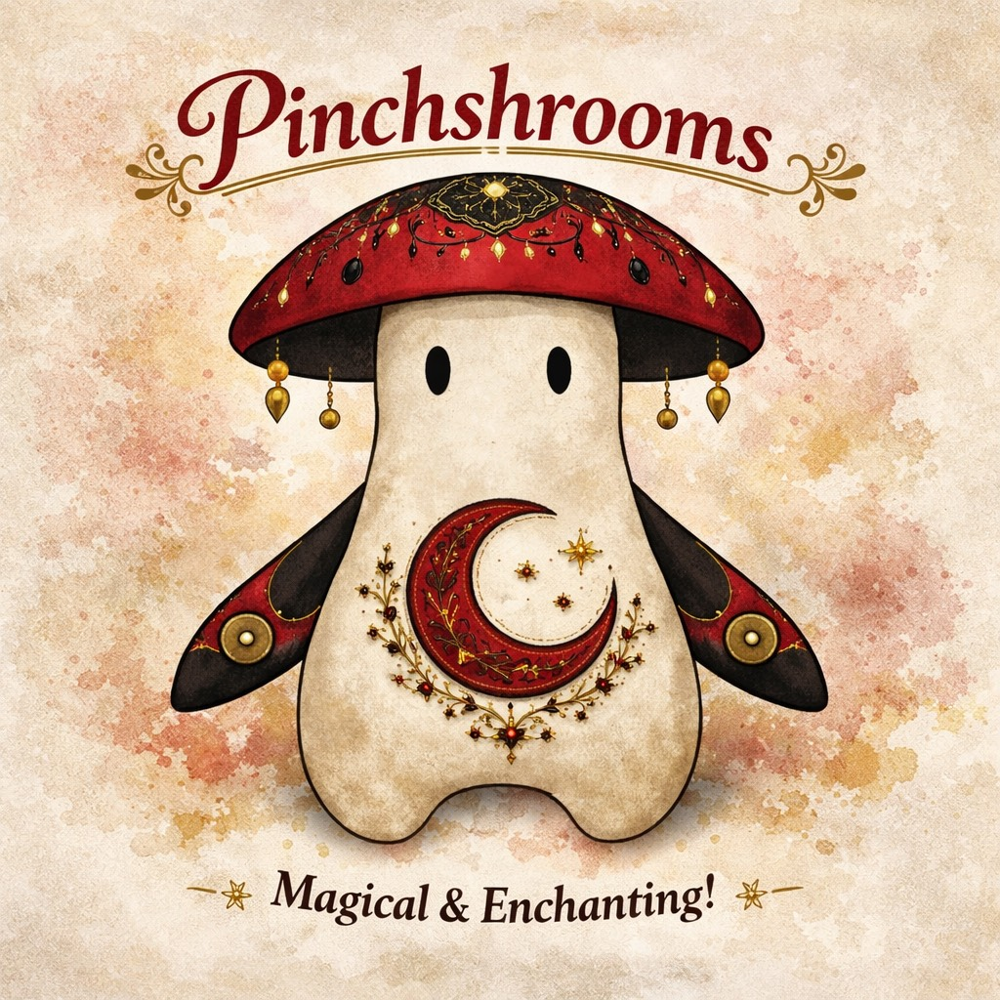
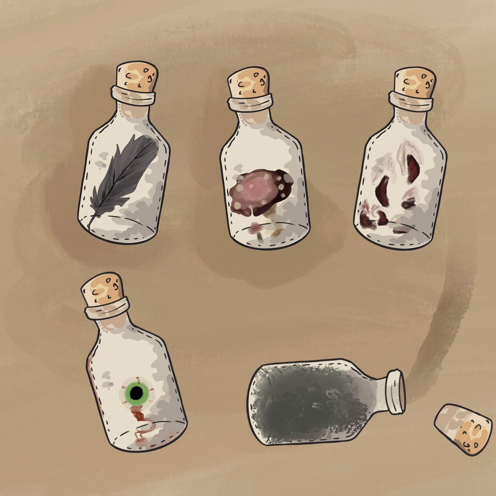

Gulpers
Broad-mouthed and endlessly loyal, Gulpers cling to their bearer through camps, markets, and misadventures. They swallow tools, trinkets, and secrets without judgement.
Gulpers: They Eat Your Stuff

Pinchshrooms
Soft-spoken companions with a habit of appearing where least expected. Many swear they grow warm when danger - or ale - is near.
For Coins, Charms & Curious Things

Shams Distillations
Curious brews, bottled rumours, and things best not questioned.
Some spirits linger longer than others
